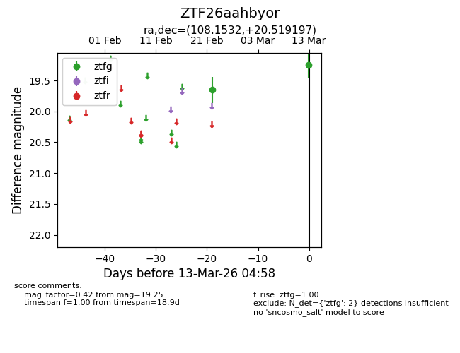
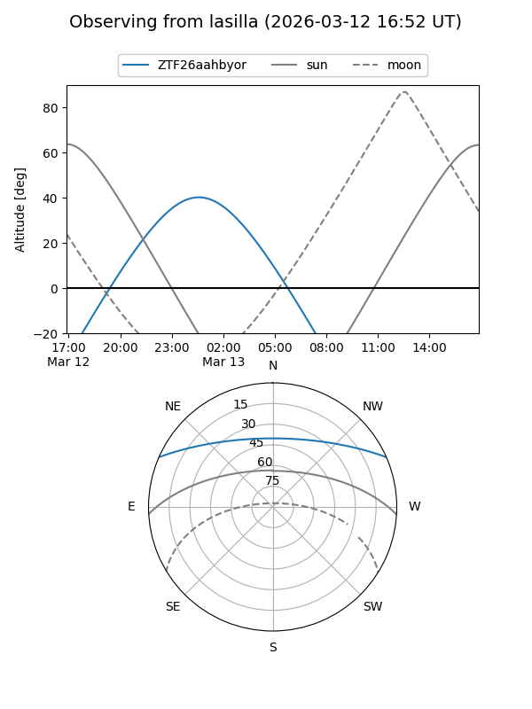
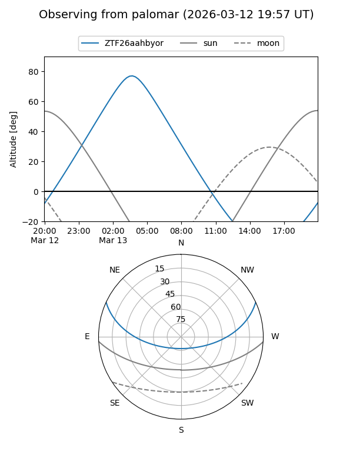

ZTF26aahbyor
Target ZTF26aahbyor at 2026-03-13 04:59
Aliases and brokers:
FINK: link
Lasair: link
ALeRCE: link
alt names
ZTF26aahbyor (ztf,fink_ztf)
Coordinates:
equatorial (ra, dec) = 108.1532,+20.51920
equatorial (HMS+DMS) = 07:12:36.76,+20:31:09.11
galactic (l, b) = (196.6399,+13.69383)
Flags:
Photometry:
last ztfg=19.25
2 ztfg detections
Lightcurve

Visibility


Additional plots